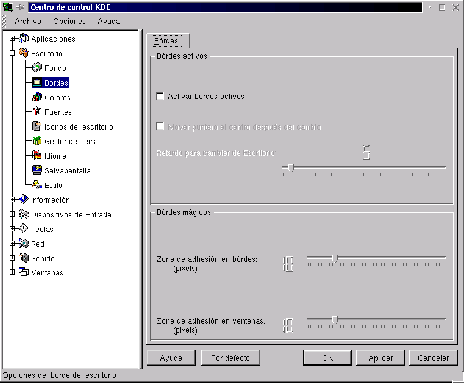

Next: Colores
Up: Personalización del escritorio
Previous: Fondo de pantalla
Índice General
Los bordes activos se utilizan para ``moverse'' de un escritorio a
otro a través del uso del mouse. Cuando están activados, si se
lleva el puntero hacia el borde derecho de la pantalla y se lo deja un
instante, el KDE activa el escritorio consecutivo. Lo mismo pasa si se
lleva el mouse hasta la izquierda de la pantalla.
Seleccionando la opción Activar bordes activos como se ve en
la figura 3.5, se puede
establecer el tiempo de retardo que requieren los bordes activos para
funcionar.
Figura 3.5:
Configuración de bordes
|

|
Otras opciones en la sección inferior del cuadro son los
Bordes Mágicos, que se utilizan para ``magnetizar'' los
bordes de las ventanas entre sí.
Proyecto Cursos - LuCAS - http://lucas.hispalinux.es/htmls/cursos.html